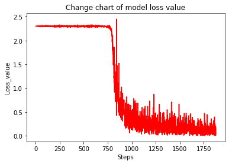

Implementing an Image Classification Application¶
Linux Windows Ascend GPU CPU Whole Process Beginner Intermediate Expert

Overview¶
This document uses a practice example to demonstrate the basic functions of MindSpore. For common users, it takes 20 to 30 minutes to complete the practice.
During the practice, a simple image classification function is implemented. The overall process is as follows:
Process the required dataset. The MNIST dataset is used in this example.
Define a network. The LeNet network is used in this example.
The loss value and precision value of the model collected by the custom callback function.
Define the loss function and optimizer.
Load the dataset and perform training. After the training is complete, check the result and save the model file.
Load the saved model for inference.
Validate the model, load the test dataset and trained model, and validate the result accuracy.
This is a simple and basic application process. Other advanced and complex applications can be extended based on this basic process.
This document is applicable to CPU, GPU and Ascend environments.
You can find the complete executable sample code at https://gitee.com/mindspore/docs/tree/r1.2/tutorials/tutorial_code/lenet.
Preparations¶
Before you start, check whether MindSpore has been correctly installed. If not, install MindSpore on your computer by visiting MindSpore installation page.
In addition, you shall have basic mathematical knowledge such as Python coding basics, probability, and matrix.
Start your MindSpore experience now.
Downloading the Dataset¶
The MNIST dataset used in this example consists of 10 classes of 28 x 28 pixels grayscale images. It has a training set of 60,000 examples, and a test set of 10,000 examples.
Download the MNIST dataset at http://yann.lecun.com/exdb/mnist/. This page provides four download links of dataset files. The first two links are required for data training, and the last two links are required for data test.
!mkdir -p ./datasets/MNIST_Data/train ./datasets/MNIST_Data/test
!wget -NP ./datasets/MNIST_Data/train https://mindspore-website.obs.myhuaweicloud.com/notebook/datasets/mnist/train-labels-idx1-ubyte
!wget -NP ./datasets/MNIST_Data/train https://mindspore-website.obs.myhuaweicloud.com/notebook/datasets/mnist/train-images-idx3-ubyte
!wget -NP ./datasets/MNIST_Data/test https://mindspore-website.obs.myhuaweicloud.com/notebook/datasets/mnist/t10k-labels-idx1-ubyte
!wget -NP ./datasets/MNIST_Data/test https://mindspore-website.obs.myhuaweicloud.com/notebook/datasets/mnist/t10k-images-idx3-ubyte
!tree ./datasets/MNIST_Data
./datasets/MNIST_Data
├── test
│ ├── t10k-images-idx3-ubyte
│ └── t10k-labels-idx1-ubyte
└── train
├── train-images-idx3-ubyte
└── train-labels-idx1-ubyte
2 directories, 4 files
Importing Python Libraries and Modules¶
Before start, you need to import Python libraries.
Currently, only the os library is required. Other libraries are not described here.
import os
For details about MindSpore modules, search on the MindSpore API Page.
Configuring the Running Information¶
Before compiling code, you need to learn basic information about the hardware and backend required for MindSpore running.
You can use context.set_context to configure the information required for running, such as the running mode, backend information, and hardware information.
Import the context module and configure the required information.
from mindspore import context
context.set_context(mode=context.GRAPH_MODE, device_target="CPU")
This example runs in graph mode. You can configure hardware information based on actual requirements. For example, if the code runs on the Ascend AI processor, set --device_target to Ascend. This rule also applies to the code running on the CPU and GPU. For details about parameters, see the API description for context.set_context.
Processing Data¶
Datasets are important for training. A good dataset can effectively improve training accuracy and efficiency. Generally, before loading a dataset, you need to perform some operations on the dataset.
A convolutional neural network such as LeNet is used to train the dataset. During data training, the data format is required. Therefore, you need to check the data in the dataset first. In this way, a targeted data conversion function can be constructed to convert the data in the dataset into a data format that meets the training requirements.
Execute the following code to view the original dataset data:
import matplotlib.pyplot as plt
import matplotlib
import numpy as np
import mindspore.dataset as ds
train_data_path = "./datasets/MNIST_Data/train"
test_data_path = "./datasets/MNIST_Data/test"
mnist_ds = ds.MnistDataset(train_data_path)
print('The type of mnist_ds:', type(mnist_ds))
print("Number of pictures contained in the mnist_ds：", mnist_ds.get_dataset_size())
dic_ds = mnist_ds.create_dict_iterator()
item = next(dic_ds)
img = item["image"].asnumpy()
label = item["label"].asnumpy()
print("The item of mnist_ds:", item.keys())
print("Tensor of image in item:", img.shape)
print("The label of item:", label)
plt.imshow(np.squeeze(img))
plt.title("number:%s"% item["label"].asnumpy())
plt.show()
The type of mnist_ds: <class 'mindspore.dataset.engine.datasets.MnistDataset'>
Number of pictures contained in the mnist_ds： 60000
The item of mnist_ds: dict_keys(['image', 'label'])
Tensor of image in item: (28, 28, 1)
The label of item: 8

From the above operation, we can see that the training datasets train-images-idx3-ubyte and train-labels-idx1-ubyte correspond to 60,000 images and 60,000 digital labels. After loading the data, the dictionary data set is converted by create_dict_iterator. View one of the data, which is a dictionary with keys image and label. The tensor of image (height: 28; width: 28; channel: 1) and label are numbers corresponding to the image.
Defining the Dataset and Data Operations¶
Define the create_dataset function to create a dataset. In this function, define the data augmentation and processing operations to be performed.
Define the dataset.
Define parameters required for data augmentation and processing.
Generate corresponding data augmentation operations according to the parameters.
Use the
mapmapping function to apply data operations to the dataset.Process the generated dataset.
After the definition is completed, use create_datasets to perform data augmentation on the original data, and extract a batch of data to view the changes after data augmentation.
import mindspore.dataset.vision.c_transforms as CV
import mindspore.dataset.transforms.c_transforms as C
from mindspore.dataset.vision import Inter
from mindspore import dtype as mstype
def create_dataset(data_path, batch_size=32, repeat_size=1,
num_parallel_workers=1):
"""
create dataset for train or test
Args:
data_path (str): Data path
batch_size (int): The number of data records in each group
repeat_size (int): The number of replicated data records
num_parallel_workers (int): The number of parallel workers
"""
# define dataset
mnist_ds = ds.MnistDataset(data_path)
# define some parameters needed for data enhancement and rough justification
resize_height, resize_width = 32, 32
rescale = 1.0 / 255.0
shift = 0.0
rescale_nml = 1 / 0.3081
shift_nml = -1 * 0.1307 / 0.3081
# according to the parameters, generate the corresponding data enhancement method
resize_op = CV.Resize((resize_height, resize_width), interpolation=Inter.LINEAR)
rescale_nml_op = CV.Rescale(rescale_nml, shift_nml)
rescale_op = CV.Rescale(rescale, shift)
hwc2chw_op = CV.HWC2CHW()
type_cast_op = C.TypeCast(mstype.int32)
# using map to apply operations to a dataset
mnist_ds = mnist_ds.map(operations=type_cast_op, input_columns="label", num_parallel_workers=num_parallel_workers)
mnist_ds = mnist_ds.map(operations=resize_op, input_columns="image", num_parallel_workers=num_parallel_workers)
mnist_ds = mnist_ds.map(operations=rescale_op, input_columns="image", num_parallel_workers=num_parallel_workers)
mnist_ds = mnist_ds.map(operations=rescale_nml_op, input_columns="image", num_parallel_workers=num_parallel_workers)
mnist_ds = mnist_ds.map(operations=hwc2chw_op, input_columns="image", num_parallel_workers=num_parallel_workers)
# process the generated dataset
buffer_size = 10000
mnist_ds = mnist_ds.shuffle(buffer_size=buffer_size)
mnist_ds = mnist_ds.batch(batch_size, drop_remainder=True)
mnist_ds = mnist_ds.repeat(repeat_size)
return mnist_ds
ms_dataset = create_dataset(train_data_path)
print('Number of groups in the dataset:', ms_dataset.get_dataset_size())
Number of groups in the dataset: 1875
After the data augmentation function is called, the dataset size changes from 60000 to 1875, which meets the expectations of the mnist_ds.batch operation in data augmentation (\(60000/32=1875\)).
In the preceding augmentation process:
The
labeldata enhancement operation in the dataset:C.TypeCast: Convert the data type toint32.
The
imagedata enhancement operation in the dataset:datasets.MnistDataset: Convert the dataset into MindSpore trainable data.CV.Resize: Resize image data pixels to meet the data size requirements of the LeNet network.CV.Rescale: Standardize and normalize image data so that the value of each pixel is in the range (0,1), which can improve training efficiency.CV.HWC2CHW: Transform the image data tensor, the tensor form is changed fromheight x width x channel(HWC) tochannel x height x width(CHW), which is convenient for data training.
Other enhancement operations:
mnist_ds.shuffle: Randomly store data in a memory that can hold 10,000 images for shuffle.mnist_ds.batch: Extract 32 images from the shuffled 10,000 image addresses to form abatch, the parameterbatch_sizeindicates the number of data contained in each group, and each group is now set to contain 32 data.mnist_ds.repeat: Thebatchdata is replicated and enhanced. The parameterrepeat_sizeindicates the number of replicated datasets.
Perform the shuffle and batch operations, and then perform the repeat operation to ensure that data is unique during one epoch.
MindSpore supports multiple data processing and augmentation operations, which are usually used in combined. For details, see section Data Processing and Data Augmentation in the MindSpore tutorials.
Viewing Enhanced Data¶
Obtain a group of data from the 1875 groups of data and view the data tensor and label.
data = next(ms_dataset.create_dict_iterator(output_numpy=True))
images = data["image"]
labels = data["label"]
print('Tensor of image:', images.shape)
print('Labels:', labels)
Tensor of image: (32, 1, 32, 32)
Labels: [9 8 5 5 1 2 3 5 7 0 6 1 0 3 8 1 2 1 5 1 5 2 8 4 4 6 4 5 5 5 7 8]
Visualize the tensor data and the value corresponding to label.
count = 1
for i in images:
plt.subplot(4, 8, count)
plt.imshow(np.squeeze(i))
plt.title('num:%s'%labels[count-1])
plt.xticks([])
count += 1
plt.axis("off")
plt.show()
Through the above query operation, you can see the transformed images. The dataset is divided into 1875 groups of data. Each group of data contains 32 images. The resolution of each image is 32 x 32. After all the data is prepared, you can proceed to the next step of data training.
Defining the Network¶
The LeNet network is relatively simple. In addition to the input layer, the LeNet network has seven layers, including two convolutional layers, two down-sample layers (pooling layers), and three full connection layers. Each layer contains different numbers of training parameters, as shown in the following figure:

For details about the LeNet network, visit http://yann.lecun.com/exdb/lenet/.
You can initialize the full connection layers and convolutional layers by Normal.
MindSpore supports multiple parameter initialization methods, such as TruncatedNormal, Normal, and Uniform, default value is Normal. For details, see the description of the mindspore.common.initializer module in the MindSpore API.
To use MindSpore for neural network definition, inherit mindspore.nn.Cell. Cell is the base class of all neural networks (such as Conv2d).
Define each layer of a neural network in the __init__ method in advance, and then define the construct method to complete the forward construction of the neural network. According to the structure of the LeNet network, define the network layers as follows:
import mindspore.nn as nn
from mindspore.common.initializer import Normal
class LeNet5(nn.Cell):
"""Lenet network structure."""
# define the operator required
def __init__(self, num_class=10, num_channel=1):
super(LeNet5, self).__init__()
self.conv1 = nn.Conv2d(num_channel, 6, 5, pad_mode='valid')
self.conv2 = nn.Conv2d(6, 16, 5, pad_mode='valid')
self.fc1 = nn.Dense(16 * 5 * 5, 120, weight_init=Normal(0.02))
self.fc2 = nn.Dense(120, 84, weight_init=Normal(0.02))
self.fc3 = nn.Dense(84, num_class, weight_init=Normal(0.02))
self.relu = nn.ReLU()
self.max_pool2d = nn.MaxPool2d(kernel_size=2, stride=2)
self.flatten = nn.Flatten()
# use the preceding operators to construct networks
def construct(self, x):
x = self.max_pool2d(self.relu(self.conv1(x)))
x = self.max_pool2d(self.relu(self.conv2(x)))
x = self.flatten(x)
x = self.relu(self.fc1(x))
x = self.relu(self.fc2(x))
x = self.fc3(x)
return x
network = LeNet5()
print("layer conv1:", network.conv1)
print("*"*40)
print("layer fc1:", network.fc1)
layer conv1: Conv2d<input_channels=1, output_channels=6, kernel_size=(5, 5),stride=(1, 1), pad_mode=valid, padding=0, dilation=(1, 1), group=1, has_bias=Falseweight_init=normal, bias_init=zeros, format=NCHW>
****************************************
layer fc1: Dense<input_channels=400, output_channels=120, has_bias=True>
After the construction is completed, you can use print(LeNet5()) to print out all the parameters of each layer in the neural network, or use LeNet().{layer name} to print the corresponding parameter information. This example chooses to print the corresponding parameters of the first convolutional layer and the first fully connected layer.
Custom Callback Function to Collect the Model Loss Value and Precision Value¶
Customize a data collection callback class StepLossAccInfo, it is used to collect two types of information:
Information about the relationship between
stepandlossvalues during training;Information of each 125 training
stepand corresponding model accuracy valueaccuracy.
This class inherits the Callback class. You can customize operations during training. After the training is completed, the data can be drawn into a graph to view the changes in step and loss, as well as the step and accuracy changes.
The following code will be used as a callback function to be called in the model training function model.train. The following visualizes the information collected during the model verification stage.
from mindspore.train.callback import Callback
# custom callback function
class StepLossAccInfo(Callback):
def __init__(self, model, eval_dataset, steps_loss, steps_eval):
self.model = model
self.eval_dataset = eval_dataset
self.steps_loss = steps_loss
self.steps_eval = steps_eval
def step_end(self, run_context):
cb_params = run_context.original_args()
cur_epoch = cb_params.cur_epoch_num
cur_step = (cur_epoch-1)*1875 + cb_params.cur_step_num
self.steps_loss["loss_value"].append(str(cb_params.net_outputs))
self.steps_loss["step"].append(str(cur_step))
if cur_step % 125 == 0:
acc = self.model.eval(self.eval_dataset, dataset_sink_mode=False)
self.steps_eval["step"].append(cur_step)
self.steps_eval["acc"].append(acc["Accuracy"])
In the preceding information:
model: computational graph model.eval_dataset: validation dataset.steps_loss: Collect the relationship between step and loss value, the data format is{"step": [], "loss_value": []}.steps_eval: Collect information about the model accuracy valueaccuracycorresponding to step, the data format is{"step": [], "acc": []}.
Defining the Loss Function and Optimizer¶
Before definition, this section briefly describes concepts of loss function and optimizer.
Loss function: It is also called objective function and is used to measure the difference between a predicted value and an actual value. Deep learning reduces the value of the loss function by continuous iteration. Defining a good loss function can effectively improve the model performance.
Optimizer: It is used to minimize the loss function, improving the model during training.
After the loss function is defined, the weight-related gradient of the loss function can be obtained. The gradient is used to indicate the weight optimization direction for the optimizer, improving model performance.
Loss functions supported by MindSpore include SoftmaxCrossEntropyWithLogits, L1Loss, MSELoss. The loss function SoftmaxCrossEntropyWithLogits is used in this example.
The optimizers supported by MindSpore include Adam, AdamWeightDecay, Momentum, etc. The popular Momentum optimizer is used here.
import mindspore.nn as nn
from mindspore.nn import SoftmaxCrossEntropyWithLogits
lr = 0.01
momentum = 0.9
# create the network
network = LeNet5()
# define the optimizer
net_opt = nn.Momentum(network.trainable_params(), lr, momentum)
# define the loss function
net_loss = SoftmaxCrossEntropyWithLogits(sparse=True, reduction='mean')
Training the Network¶
After completing the construction of the neural network, you can start network training. The network training can be conveniently performed through the Model.train interface provided by MindSpore. The parameters mainly include:
epoch_size: specifies the number of batches of images that need to be traversed by each epoch.ds_train: specifies the training dataset.MindSpore-provided callback mechanism. The callback function
callbackscontainsModelCheckpoint,LossMonitor, andCallbackarguments, whereModelCheckpointis used to save network models and parameters for performing fine-tuning.dataset_sink_mode: specifies the dataset sink mode. The default valueTrueneeds to be set toFalsebecause this mode does not support the CPU computing platform.
import os
from mindspore import Tensor, Model
from mindspore.train.callback import ModelCheckpoint, CheckpointConfig, LossMonitor
from mindspore.nn import Accuracy
epoch_size = 1
mnist_path = "./datasets/MNIST_Data"
model_path = "./models/ckpt/mindspore_quick_start/"
repeat_size = 1
ds_train = create_dataset(os.path.join(mnist_path, "train"), 32, repeat_size)
eval_dataset = create_dataset(os.path.join(mnist_path, "test"), 32)
# clean up old run files before in Linux
os.system('rm -f {0}*.ckpt {0}*.meta {0}*.pb'.format(model_path))
# define the model
model = Model(network, net_loss, net_opt, metrics={"Accuracy": Accuracy()} )
# save the network model and parameters for subsequence fine-tuning
config_ck = CheckpointConfig(save_checkpoint_steps=375, keep_checkpoint_max=16)
# group layers into an object with training and evaluation features
ckpoint_cb = ModelCheckpoint(prefix="checkpoint_lenet", directory=model_path, config=config_ck)
steps_loss = {"step": [], "loss_value": []}
steps_eval = {"step": [], "acc": []}
# collect the steps,loss and accuracy information
step_loss_acc_info = StepLossAccInfo(model , eval_dataset, steps_loss, steps_eval)
model.train(epoch_size, ds_train, callbacks=[ckpoint_cb, LossMonitor(125), step_loss_acc_info], dataset_sink_mode=False)
epoch: 1 step: 125, loss is 2.2961428
epoch: 1 step: 250, loss is 2.2972755
epoch: 1 step: 375, loss is 2.2992194
epoch: 1 step: 500, loss is 2.3089285
epoch: 1 step: 625, loss is 2.304193
epoch: 1 step: 750, loss is 2.3023324
epoch: 1 step: 875, loss is 0.69262105
epoch: 1 step: 1000, loss is 0.23356618
epoch: 1 step: 1125, loss is 0.35567114
epoch: 1 step: 1250, loss is 0.2065609
epoch: 1 step: 1375, loss is 0.19551893
epoch: 1 step: 1500, loss is 0.1836512
epoch: 1 step: 1625, loss is 0.028234977
epoch: 1 step: 1750, loss is 0.1124336
epoch: 1 step: 1875, loss is 0.026502304
After training, multiple model files will be generated and saved under the pre-set directory.
!tree $model_path
./models/ckpt/mindspore_quick_start/
├── checkpoint_lenet-1_1125.ckpt
├── checkpoint_lenet-1_1500.ckpt
├── checkpoint_lenet-1_1875.ckpt
├── checkpoint_lenet-1_375.ckpt
├── checkpoint_lenet-1_750.ckpt
└── checkpoint_lenet-graph.meta
0 directories, 6 files
The meaning of the file name: {Customized name configured in ModelCheckpoint}-{The number of epoch}-{The number of step}.
To use free control loop iterations, traversing data sets, etc., you can refer to the “Customizing a Training Cycle” part of the official website programming guide “Training”.
Checking the Loss Value of the Model with the Change of Training Steps¶
steps = steps_loss["step"]
loss_value = steps_loss["loss_value"]
steps = list(map(int, steps))
loss_value = list(map(float, loss_value))
plt.plot(steps, loss_value, color="red")
plt.xlabel("Steps")
plt.ylabel("Loss_value")
plt.title("Change chart of model loss value")
plt.show()

Judging from the above, it can be divided into three stages:
Stage 1: When the training starts, the loss value is around 2.2, which indicates that the training performance is not satisfied.
Stage 2: When the training arrives at a certain point, the loss value decreases sharply and the training performance is greatly improved.
Stage 3: After the loss value converges to a small value, it tends to get close to 0. At this point, the training performance is steady and cannot be further improved, leading to the result that the training is terminated.
Validating the Model¶
After obtaining the model file, validate the model generalization capability.
The process of building a network for verification is as follows:
Load the model by reading the parameter
param_dictin the.ckptfile.Load the parameter
param_dictto the neural network, Lenet.Load the test dataset.
Call the function,
model.eval, to transfer the parameters of the test dataset,ds_eval. Compute the accuracy ofcheckpoint_lenet-{epoch}_1875.ckpt
from mindspore import load_checkpoint, load_param_into_net
# testing relate modules
def test_net(network, model, mnist_path):
"""Define the evaluation method."""
print("============== Starting Testing ==============")
# load the saved model for evaluation
param_dict = load_checkpoint("./models/ckpt/mindspore_quick_start/checkpoint_lenet-1_1875.ckpt")
# load parameter to the network
load_param_into_net(network, param_dict)
# load testing dataset
ds_eval = create_dataset(os.path.join(mnist_path, "test"))
acc = model.eval(ds_eval, dataset_sink_mode=False)
print("============== Accuracy:{} ==============".format(acc))
test_net(network, model, mnist_path)
============== Starting Testing ==============
============== Accuracy:{'Accuracy': 0.9697516025641025} ==============
In the preceding information:
load_checkpoint：This API is used to load the CheckPoint model parameter file and return a parameter dictionary.checkpoint_lenet-1_1875.ckpt：name of the saved CheckPoint model file.load_param_into_net：This API is used to load parameters to the network.
When the training step reaches 1875, the accuracy of the model is over 95%, meaning the model performance is good.
We can check the change of the model accuracy as the training step changes.
eval_show draws the line chart of model accuracy every 25 step. In particular, steps_eval stores the training step of the model and the corresponding accuracy information.
def eval_show(steps_eval):
plt.xlabel("step number")
plt.ylabel("Model accuracy")
plt.title("Model accuracy variation chart")
plt.plot(steps_eval["step"], steps_eval["acc"], "red")
plt.show()
eval_show(steps_eval)

In the figure, it can be seen that the change of the model accuracy can be divided in three stages:
Stage 1: When the training starts, the model accuracy rises slowly.
Stage 2: At a certain point, the model accuracy rises sharply.
Stage 3: The model accuracy nearly comes to 1 without reaching.
During the training process, as the training data increases, it will have a positive correlation with the model accuracy, but as the accuracy reaches a certain level, the training gains will decrease.
Inference and Prediction¶
Apply the trained model to predict a single image or a set of images. The procedure is as follows:
Transform the test data to the data that fits LeNet.
Extract the
imagedata.Call the function,
model.predict, to predict the corresponding digit in eachimage. To be noted,predictwill returns the probability of predicting 0 to 9 for eachimage.Call the
plot_piefunction to display the probability of predictions. Negative probabilities will be removed and not be displayed.
Load the dataset to be predicted and call the create_dataset function to transform the test dataset into required formats. Select a set of 32 images for inference and prediction.
ds_test = create_dataset(test_data_path).create_dict_iterator()
data = next(ds_test)
images = data["image"].asnumpy()
labels = data["label"].asnumpy()
output = model.predict(Tensor(data['image']))
pred = np.argmax(output.asnumpy(), axis=1)
err_num = []
index = 1
for i in range(len(labels)):
plt.subplot(4, 8, i+1)
color = 'blue' if pred[i] == labels[i] else 'red'
plt.title("pre:{}".format(pred[i]), color=color)
plt.imshow(np.squeeze(images[i]))
plt.axis("off")
if color == 'red':
index = 0
print("Row {}, column {} is incorrectly identified as {}, the correct value should be {}".format(int(i/8)+1, i%8+1, pred[i], labels[i]), '\n')
if index:
print("All the figures in this group are predicted correctly!")
print(pred, "<--Predicted figures")
print(labels, "<--The right number")
plt.show()
Row 1, column 2 is incorrectly identified as 8, the correct value should be 2
Row 3, column 7 is incorrectly identified as 9, the correct value should be 4
[5 8 0 2 7 4 1 7 8 6 6 8 7 9 5 8 7 2 0 4 5 9 9 3 9 1 3 9 7 6 3 4] <--Predicted figures
[5 2 0 2 7 4 1 7 8 6 6 8 7 9 5 8 7 2 0 4 5 9 4 3 9 1 3 9 7 6 3 4] <--The right number

Draw a pie chart for probability analysis. In this example, it displays a pie chart for the current batch in the first image.
prb stores the preceding 32 prediction numbers and corresponding output results. The classification result prb[0] corresponding to the first image is obtained, and the sigmol formula \(\frac{1}{1+e^{-x}}\) is used to obtain the probability of [0-9] corresponding to the image. The number whose probability value is greater than 0.5 is analyzed in the pie chart.
import numpy as np
# define the pie drawing function of probability analysis
prb = output.asnumpy()
def plot_pie(prbs):
dict1 = {}
# remove the negative number and build the dictionary dict1. The key is the number and the value is the probability value
for i in range(10):
if prbs[i] > 0:
dict1[str(i)] = prbs[i]
label_list = dict1.keys()
size = dict1.values()
colors = ["red", "green", "pink", "blue", "purple", "orange", "gray"]
color = colors[: len(size)]
plt.pie(size, colors=color, labels=label_list, labeldistance=1.1, autopct="%1.1f%%", shadow=False, startangle=90, pctdistance=0.6)
plt.axis("equal")
plt.legend()
plt.title("Image classification")
plt.show()
print("The probability of corresponding numbers [0-9] in Figure 1:\n", list(map(lambda x:1/(1+np.exp(-x)), prb[0])))
plot_pie(prb[0])
The probability of corresponding numbers [0-9] in Figure 1:
[0.16316024637045334, 0.04876983802517727, 0.02261393383191808, 0.9963960715325838, 0.037634749376478496, 0.998856840107891, 0.1612087582052347, 0.08714517716531343, 0.6207903209907534, 0.9653037548477632]

That’s the whole experience of the handwritten number classification application.